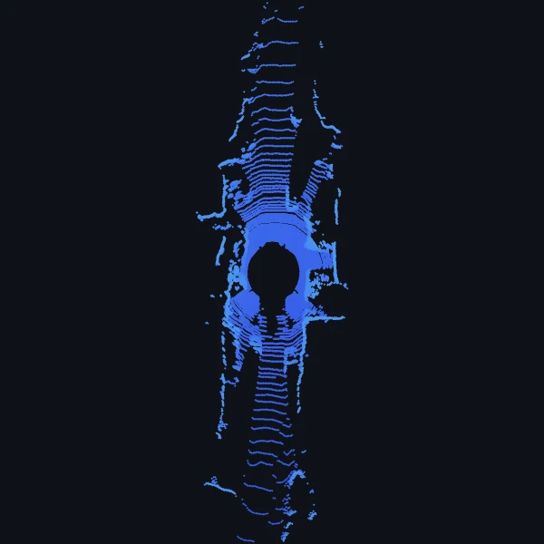
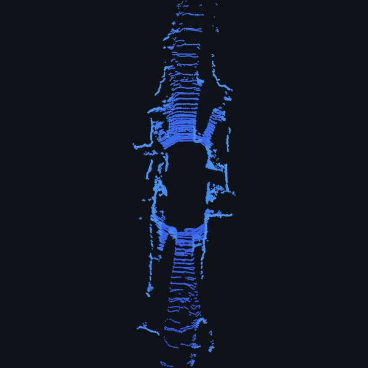
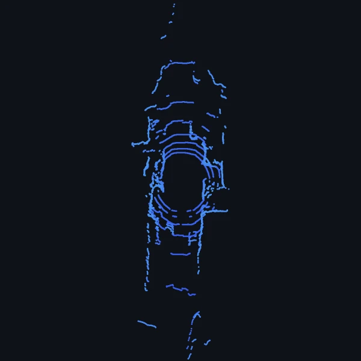
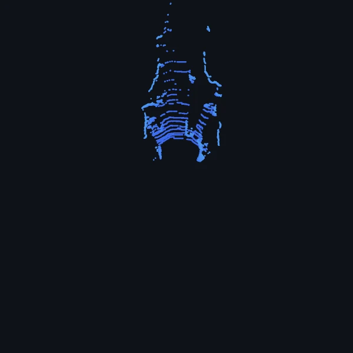
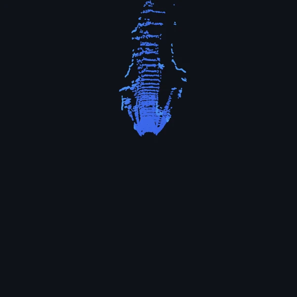
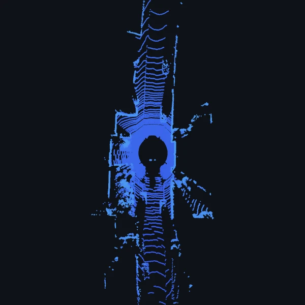
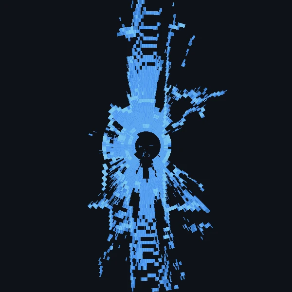
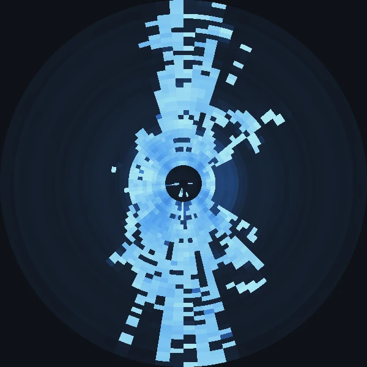
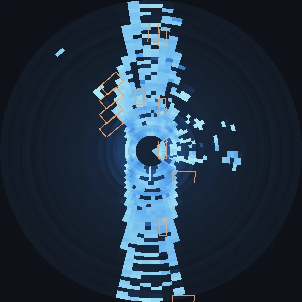

Range images
New rays borrow the nearest pixel of the training raster.
A scan pattern agnostic 4D world model via direct ray decoding
Overview
The idea
One spatial latent per scene. Only the decoder sees the target LiDAR's rays, so the same latent yields scans for any pattern at the same mounting position.
Scene latent noise σ = 1.00
Decoded with HDL-64E rays

HDL-64E
OS2-128
VLP-16
Aeries II
AviaThe final latent, decoded for five LiDARs
Same rays of a new LiDAR, side view (schematic). Red: wrong return, true point circled.
New rays borrow the nearest pixel of the training raster.
Rays stop at the first occupied voxel, early or on spurious geometry.
Each ray reads the latent for a depth, then refines it locally. No surface in between.
Results
Realism
Ray decoding
Temporal consistency
Scan patterns
Downstream
Speed
Three observed scans and the future motion in, 2 s of predicted latents out, each decoded for every LiDAR.
Time for one scene and four scans
Real scans of a new LiDAR also differ in city, vehicle and mounting, so they cannot isolate the scan pattern. Instead, we hide the VLP-16 rows or Avia cells of a real scan and score each method on exactly these rays. Occupancy and NKSR meshes still see the hidden region.
Gray: input. Color: distance to the measured return (cap 0.5 m).
Depth error on masked rays dMAE, m
Past latents are warped by the given motion before each frame is predicted. Registration error between predicted frames: 66–72% lower than the best compared world model.
Same observed scans and initial noise. Only the given ego path differs (a 2.5 m left lane change). Structure precision of the lane-change prediction at 0.2 m: 1.00 / 0.98 / 0.97 / 0.93 at 0.5 / 1 / 1.5 / 2 s.
One four-way intersection (drive 0002), the same observed scans and initial noise, three given ego paths. The right turn is the recorded one. A car approaches from the right and slows to the stop line; its recorded boxes are given (amber points). Magenta: the given path, the part already driven brighter. 3.0 s, half speed.
The same intersection and scans. Our car keeps the recorded right turn. Only the other car's boxes after the observed scans change: it stops at the line as recorded, or given boxes send it straight across or right into the road ahead. Amber: its points and its given path. 3.0 s, half speed.
A scene generated from 3D boxes alone (plus an HD map on nuScenes), next to the recorded scan of that layout.
Edit the future boxes, and the prediction follows, in any scan pattern.
Predicted scans, decoded for the target LiDAR, are the only training data from that sensor: no recorded points, no labels.
HeLiOS on HeLiPR Roundabout. Queries vs. an OS2-128 database.
4DMOS on HeLiMOS, delayed mode. One 5 s drive, four LiDARs.
Voxel R-CNN on PandaSet PandarGT. Detections with score ≥ 0.2.
Scored cars, score ≥ 0.2. Over all 35 test scenes: 3D AP 10.5 → 53.5.
How it works
Encode to a spatial latent, predict latents, decode the target LiDAR's rays.
Any scan is binned on one hybrid cylindrical-spherical (HCS) grid, 80 × 160 × 640 cells up to 80 m. Each cell stores occupancy, point count and mean radial offset.
Elevation folds into channels. Each latent position is a fixed region around the sensor, not an input beam.

Scan

HCS cells ρ, θ, φ

Latent z = E(P)
Unrolled 80 × 80 × 32
A diffusion transformer $F_\psi$ (rectified flow, 10 Euler steps) generates latents, conditioned on boxes and HD maps on the $(\rho,\theta)$ grid.
Past latents are warped by the ego pose $\mathbf T$; inside tracked boxes by the box motion $\mathbf B_{\mathrm{ref}}\mathbf B^{-1}$, so objects move with their boxes.
Future latent noise σ = 1.00
Clean estimate, decoded
Denoising. The latent 1.0 s ahead, from noise in 10 steps; its estimate decoded per step.
Reference → aligned real warp

Predicted t
Aligning a reference. Each cell of a 0.5 s-old latent moves to the target frame: blue with the ego motion, orange with its car box. Arrows: the paths of the ego and the moving cars over the 0.5 s. Dashed squares: where a moving car would land with ego motion alone.
Only the decoder gets the target rays $\mathcal R^s$. Each ray attends to the whole latent and predicts a hit probability $p_i$ and a preliminary depth $d^0_i$ (bin + offset).
Local features at $\mathbf x_i=d^0_i\mathbf r_i$ refine it to $\hat d_i$. No surface or field in between.
Attention over the latent gives $p_i$ and a log-scale depth, 2.4–72 m.
Features at $d^0_i$ correct it, even across bins.
A ray's output depends only on its direction, not on other rays.
Rays are labeled hit (depth) or miss. Aggregated scans and random patterns widen supervision.
Decoder: focal loss on hits and misses, cross-entropy on the depth bin, Smooth-$\ell_1$ on depth.
World model: latent loss, plus a ray loss through the frozen decoder at low noise.
Cite
@misc{onelatentworld2026,
title = {One Latent World for Heterogeneous {LiDARs}: A Scan Pattern Agnostic {4D} World Model via Direct Ray Decoding},
author = {Jung, Minwoo and Lee, Dongjae and Lee, DongGuw and Park, Yeong Sang and Fallon, Maurice and Kim, Ayoung},
year = {2026}
}